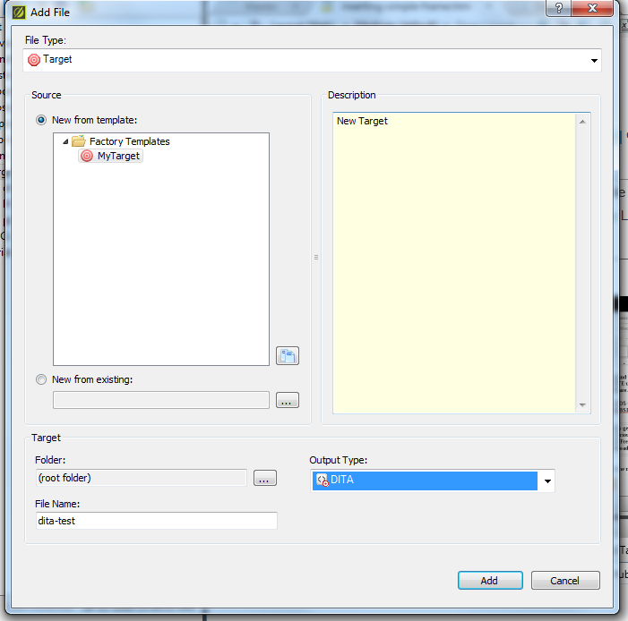
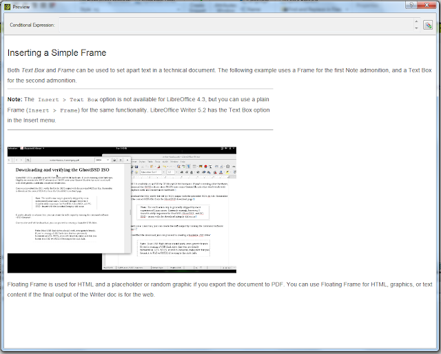
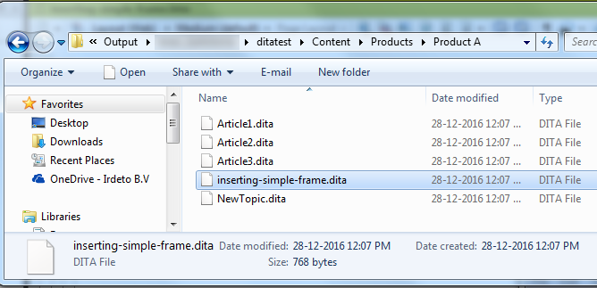

Creating DITA Files from MadCap Flare 11¶
DITA content is considered a “legacy” format in MadCap Flare and the Help file in Flare explicitly points out you can import DITA content to the application. However, there are limitations to editing the markup and associated styles. On the upside, Flare is excellent for transforming content to popular end user formats such as PDF and HTML5 and includes a truckload of preset styles, whereas back in the day, it was troublesome to convert from one format to the other without losing consistency using a tool chain. If your organization or company requires DITA files, there is a workaround for producing DITA files from existing content produced using Flare. Although it doesn’t save you from editing the markup, it does cut down work time considerably compared with creating DITA files from scratch using a separate IDE or plain text editor.

This article applies to MadCap Flare 11 with a basic workspace and presets. No customizations were made to Flare for the purpose of this article.
The following preset Flare styles and tags were used for the example in this article:
glossary(for adding terms to the glossary)keyword(for adding text to the Index)kbdtag (for formatting user interface text)img(for adding images to the article)divstyle for a text box (for adding the Note admonition)
Setting up and previewing the DITA Target
To create a DITA Target output:
In the Project Organizer, right-click the Targets folder, and click Add Target.
Input a File Name for the Target, and select DITA as the Output Type.
For this example, the DITA target name is DITA-test.
Click Add.
Once the DITA target is created, the target is available as a preview.
To preview the file using the DITA target, click the Preview icon, and then click the DITA target.
Compare the following two screenshots for the PDF/HTML and the DITA output.
The Flare DITA preview uses Flare styles.

The Flare PDF output preview is almost similar in formatting except for issues with the text box border.
Apart from the added Glossary definition and an overly long text box border, there isn’t much difference in formatting between the PDF/HTML output and the DITA output. Note, however, that the preview for a DITA target is misleading and only applies to publishing the DITA file from Flare.
If you’re satisfied with how the DITA preview looks, you can build the DITA output for the whole project as you would with any Flare project.
On the Project ribbon, click Build Primary, and then select your DITA target.
Notes on the DITA output and markup¶
Once the DITA target is built, open the Output folder and navigate to the DITA target output folder to edit the DITA map. The DITA map is located in the parent folder of the target folder. DITA files have the standard .dita extension and you can open the .**DITA** files in your IDE or text editor of choice.
The DITA map, DITA glossary, and DITA topic files produced from Flare are pretty clean, and have significantly less markup compared with DITA output from Adobe FrameMaker. Moreover, the DITA files from the Flare target uses the OASIS Public identifiers for DTDs, which means validation in a DITA-compliant environment should have little to no issues.

Note that Flare automatically removes tags for for keyword, kbd style, image, and div and doesn’t convert all the tags to DITA-compliant tags. The indexterm tag was an exception for this example, and was converted from MadCap:glossaryTerm. Notably, markup for the screenshot is removed, which means if you decide to use the DITA export from Flare for your DITA projects in a different environment, you will have to manually add back references to images using a text editor or IDE.